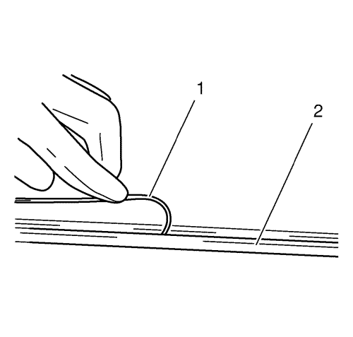

- Desconecte la batería.
- Desmonte la moldura de la rejilla de entrada de aire. Consultar Sustitución del panel de la rejilla de entrada de aire .
- Desmonte la moldura embellecedora del parabrisas. Consultar Sustitución de las molduras embellecedoras del parabrisas .
- Desmonte el espejo retrovisor interior. Consultar Sustitución del retrovisor interior .
- Utilice el sistema BO-46974 para desmontar el parabrisas.
Advertencia: Consulte Advertencia sobre salida de descongelación en la sección Prólogo.
- Efectúe la medición de la diagonal del parabrisas.
- Recorte alambre de cortar en longitudes igual a cuatro veces la anterior.
Ca. 6200 mm (244,093 pulg.); la circunferencia del rollo correspondiente de alambre es de aproximadamente 1000 mm (39,369 pulg.).
- Caliente la lezna de inserción con una herramienta adecuada.
- Introduzca la lezna de inserción (1) a través del lecho de pegamento en la zona de la pared delantera.
Asegúrese de que el parabrisas no sufre daños en este proceso, de otra forma podrían producirse fisuras por tensión en el parabrisas.
- Introduzca el alambre a través.
| • | Enhebre el alambre de cortar en el orificio de la lezna de inserción y enróllelo. |
| • | Introduzca el alambre de cortar con la lezna de inserción en el medio del volante de dirección del habitáculo. |
- Libere las partes delantera izquierda y derecha del carril del techo.

- Sitúe el alambre bajo el parabrisas en todo su perímetro.
El alambre de cortar (1) deberá enrollarse bajo la junta de goma (2) del cristal en todo el contorno del parabrisas.

- Introduzca el segundo extremo del alambre a través.
| • | Introduzca la lezna de inserción solapando aprox. a 10mm (0,393 pulg.) el lugar de la primera inserción en el lecho de pegamento. |
| • | Enhebre el alambre de cortar en el orificio de la lezna de inserción y enróllelo. |
| • | Introduzca el resto del alambre en el habitáculo con la ayuda de la lezna de inserción. |
Nota: Asegúrese de que el alambre de cortar esté correctamente ajustado al rodillo de deflexión del cabrestante.
- Coloque el cabrestante con dos cabezales de devanado (2) en el vehículo.
| • | Posicione el cabrestante en la zona derecha del parabrisas. |
| • | Enganche el alambre de cortar al cabrestante. |
| • | Insertar la carraca de transferencia y el alambre de cortar pretensado. |
Nota: En la zona del montante A/pared frontal se deberá aplicar una mayor fuerza de tracción para efectuar el corte.
- Recortar el parabrisas.
| • | Utilice la lámina de plástico para proteger el tablero de instrumentos. |
| • | La flecha muestra la dirección que sigue el cable de cortar (1). |
| • | Recortar el parabrisas hasta que el alambre de cortar esté al nivel con el cabrestante. |
Nota: Asegúrese de que el alambre de cortar esté correctamente ajustado al rodillo de deflexión del cabrestante.
- Coloque el cabrestante con dos cabezales de devanado (2) en el vehículo.
| • | Posicione el cabrestante cerca del espejo retrovisor del habitáculo interior. |
| • | Insertar la carraca de transferencia y el alambre de cortar pretensado. |
Nota: En la zona del montante A/marco del techo se deberá aplicar una mayor fuerza de tracción para efectuar el corte.
- Recortar el parabrisas.
| • | Utilice el pisador y la placa de plástico para proteger el techo corredizo. |
| • | La flecha muestra la dirección que sigue el cable de cortar (1). |
| • | Recortar el parabrisas hasta que el alambre de cortar esté al nivel con el cabrestante. |
Nota: Asegúrese de que el alambre de cortar esté correctamente ajustado al rodillo de deflexión del cabrestante.
- Coloque el cabrestante con un cabezal de devanado en el vehículo.
| • | Posicione el cabrestante con un cabezal de devanado en el montante A en el lado del conductor (2). |
| • | Enganche el alambre de cortar (1) al cabrestante. |
| • | Insertar la carraca de transferencia y el alambre de cortar pretensado. |
Nota: Utilice lubricante en el rodillo inversor. Se deberá aplicar una mayor fuerza de tracción para efectuar el corte de la zona alrededor del montante A/pared del salpicadero.
- Recortar el parabrisas.
| • | La flecha muestra la dirección que sigue el cable de cortar. |
| • | Recortar el parabrisas hasta que el alambre de cortar esté al nivel con el cabrestante. |
| • | Utilice la lámina de plástico para proteger el tablero de instrumentos. |
Nota: Asegúrese de que el alambre de cortar esté correctamente ajustado al rodillo de deflexión del cabrestante.
- Coloque el cabrestante con un cabezal de devanado en el vehículo.
| • | Posicione el cabrestante con un cabezal de devanado en la zona del marco del techo (1). |
| • | Insertar la carraca de transferencia y el alambre de cortar pretensado (2). |
Nota: Utilice lubricante en el rodillo inversor. Se deberá aplicar una mayor fuerza de tracción para efectuar el corte de la zona alrededor del montante A/marco del techo.
- Recortar el parabrisas.
| • | La flecha muestra la dirección que sigue el cable de cortar. |
| • | Recortar el parabrisas hasta que el alambre de cortar esté al nivel con el cabrestante. |
| • | Utilice la lámina de plástico para proteger el techo. |
- Posicione ambas herramientas de corte.
| • | Desplace el cabrestante con dos cabezales de devanado hacia abajo (1). |
| • | Desplace el cabrestante con un cabezal de devanado (2) en la zona del techo de forma que el alambre de corte (3) se cruce. |
| • | Insertar la carraca de transferencia y el alambre de cortar pretensado. |
- Recortar el parabrisas.
| • | Utilice la lámina de plástico para proteger el techo. |
| • | Recorte el parabrisas hasta que el alambre de cortar haya traspasado totalmente el lecho de pegamento. |
| • | La flecha muestra la dirección que sigue el cable de cortar. |
- Desmonte el sistema de desmontaje de cristales.
- Acople la herramienta de sujeción BO-641.
Nota: Se requiere un segundo mecánico.
- Retirar el parabrisas.

- Corte la cinta adhesiva con la cuchilla (1) que se adjunta hasta alcanzar un espesor de 1 mm (0,039 pulg.) en todo su contorno.
- Reparar cualquier daño a la pintura.
Utilizar un lápiz de retoque de pintura para igualar el color del vehículo y reparar cualquier daño a la pintura.
- Corte el cordón de pegamento del cristal.
Corte la cinta adhesiva con la cuchilla (1) que se adjunta hasta alcanzar un espesor de 1 mm (0,039 pulg.) en todo su contorno.